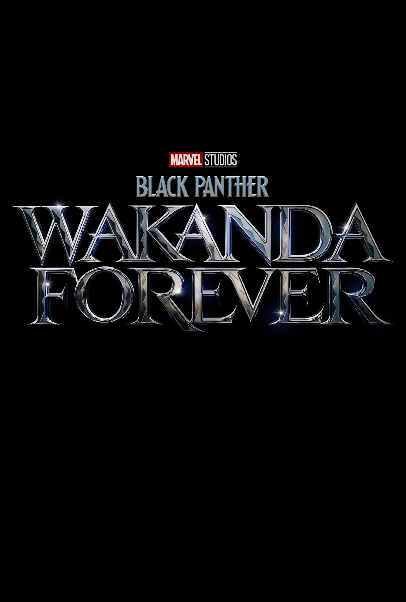

T
ahun 2022 merupakan tahun yang berbeda dari 2 tahun sebelumnya, dikarenakan tahun 2022 ini banyak bioskop yang telah dibuka. Hal ini membuat film-film yang tertunda penayangannya pada tahun lalu akibat pandemi akan dirilis. Seperti yang kita ketahui, dari Tahun ke tahun Banyak film yang terus diproduksi. Bisa diperkirakan tahun ini akan menjadi tahun film box office. Berikut daftar 10 Film Paling Ditunggu Di Tahun 2022 :
| No | Poster | Nama Film | Tanggal Rilis | Genre | Pemeran | Sutradara |
|---|---|---|---|---|---|---|
| 1 | The Northman | 22 April 2022 | Action, Adventure, Drama | Alexander Skarsgård, Anya Taylor-Joy, Nicole Kidman, Willem Dafoe, Ethan Hawke | Robert Eggers | |
| 2 | Doctor Strange in the Multiverse of Madness | 6 Mei 2022 | Adventure, Fantasy | Benedict Cumberbatch, Elizabeth Olsen, Rachel McAdams, Chiwetel Ejiofor | Sam Raimi | |
| 3 |  |
Thor: Love and Thunder | 8 Juli 2022 | Adventure, Fantasy | Chris Pratt, Natalie Portman, Chris Hemsworth, Matt Damon, Christian Bale | Taika Waititi |
| 4 | Spider-Man: Across the Spider-Verse (Part One) | 7 Oktober 2022 | Adventure, Superhero | Hailee Steinfeld, Shameik Moore, Oscar Isacc | Joaquim Santos, Kemp Powers, Justin | |
| 5 |  | Black Panther: Wakanda Forever | 11 November 2022 | Adventure, Superhero | Letitia Wright, Tenoch Huerta, Winston Duke | Ryan Coogler |
| 6 |  |
Morbius | 28 Januari 2022 | Fantasy, Superhero | Jared Leto, Matt Smith, Tyrese Gibson | Daniel Espinosa |
| 7 |  |
Fantastic Beasts: The Secrets of Dumbledore | 8 April 2022 | Fantasy, Adventure | Mads Mikkeelsen, Eddie Redmayne, Ezra Miller | David Yates |
| 8 | Avatar 2 | 16 Desember 2022 | Sci-Fi, Fiction | Zoe Saldana, Sam Worthington, Kate Winslet | James Cameron | |
| 9 |  |
The Batman | 4 Maret 2022 | Action, Adventure | Robert Pattinson, Paul Dano, Colin Farell | Matt Reeves |
| 10 | Jurassic World: Dominion | 10 Juni 2022 | Sci-fi, Action | Chris Pratt, Bryce Dallas Howard, Sam Neill | Colin Trevorrow |